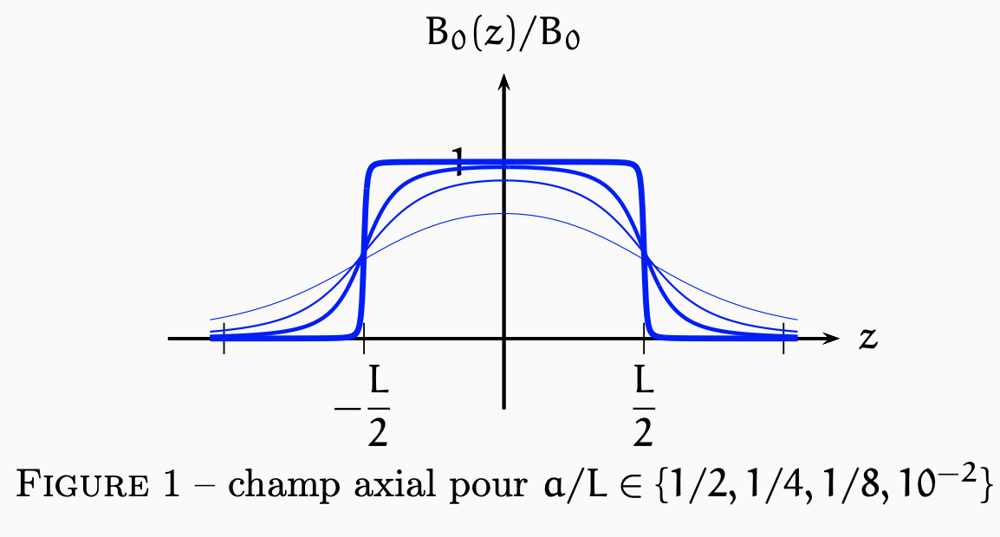

PrepOral
[MP] [Maison]
Solénoïde finie
Enoncé
On considère une spire circulaire de rayon $a$, d’axe $Oz$ et de centre $O$. Cette spire est parcourue par un courant $I$ compté positivement dans le sens trigonométrique. La loi de Biot et Savart permet de calculer aisément le champ magnétique en un point $M$ de l’axe $Oz$ de la spire : $$\vec{B}=\frac{\mu_0I}{2a}\sin^3(\alpha(z))$$ où $\alpha(z)$ est l'angle sous lequel est vu le rayon de la spire depuis $M(z)$.
1. En modélisant la spire par un moment magnétique retrouver ce résultat dans
l'approximation dipolaire.
On considère à présent un solénoïde de longueur $L$, constitué de $N$ spires jointives de rayon $a$,
coaxiales et parcoures par un courant $I$.
2. Déterminer le champ magnétique sur l'axe du solénoïde.
3. Faire le lien avec le modèle du solénoïde vu en cours.
Commentaires
Encore jamais posé !
Corrigé
1.$m=\pi a^2 I$ et $\alpha(z) \simeq a/z$ : $$\vec{B}=\frac{\mu_0 2m}{4 \pi z^3}\vec{u_z}= \frac{\mu_0 I}{2 a}\sin^3{\alpha(z)}\vec{u_z}$$ 2. $$\vec{B}=\int_{-L/2}^{L/2} \frac{\mu_0 N I}{2aL} \sin^3{\alpha(z-z_0)} dz_0 \vec{u_z}$$ $$\vec{B} = \frac{\mu_0 NI}{L} \frac{(\cos{\alpha_1}- \cos{\alpha_2}){2} \vec{u_z}$$ 